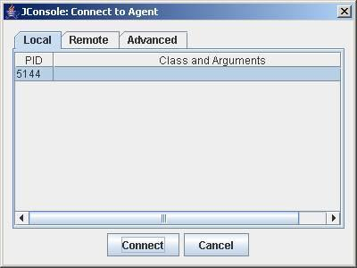
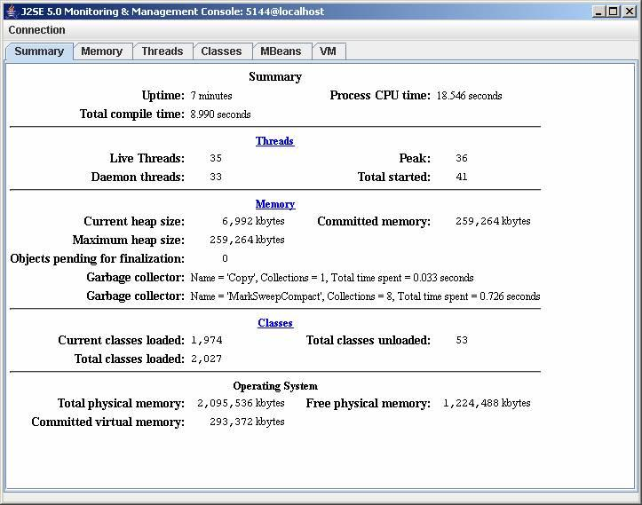
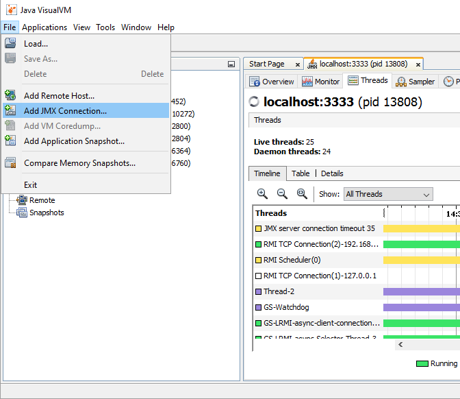
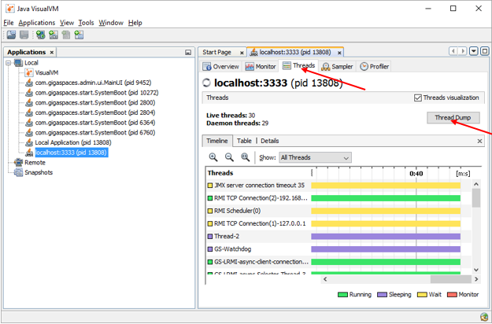
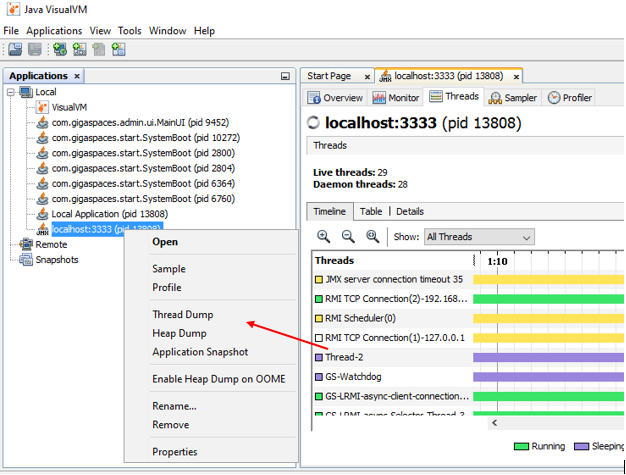

In some cases, you might want to monitor the activity of the JVM running as part of your .NET application. The jconsole is a great tool that allows you to troubleshoot the JVM internals.
The following is used to open the JMX port to view and monitor the JVM loaded into the .NET process memory address.
Have the following settings as part of your app.config file:
<?xml version="1.0" encoding="utf-8" ?>
<configuration>
<configSections>
<section name="GigaSpaces" type="GigaSpaces.Core.Configuration.GigaSpacesCoreConfiguration, GigaSpaces.Core"/>
</configSections>
<GigaSpaces>
<JvmSettings>
<JvmCustomOptions IgnoreUnrecognized="false">
<add Option="-Dcom.sun.management.jmxremote.port=5144"/>
<add Option="-Dcom.sun.management.jmxremote.ssl=false"/>
<add Option="-Dcom.sun.management.jmxremote.authenticate=false"/>
</JvmCustomOptions>
</JvmSettings>
</GigaSpaces>
</configuration>
See .NET JVM Configuration for more details.
Start jconsole – jconsole is located under the bin directory of the Java home, by default it is under <Installation dir>\Runtime\java\bin
Once the jconsole is started, select the Local tab:

This shows the status of the JVM running in your .NET application:

For more details about JMX and jconsole, refer to:
- Sun - Monitoring and Management Using JMX
- Sun - Using jconsole.
As an alternative to viewing in JConsole, you can use JVisualVM.
Start JVisualVM. The default location is the C:\GigaSpaces\XAP.NET-[%=Versions.xap-release%]-x64\Runtime\Java directory.
Connect via JMX. Go to File | Add JMX Connection...

Enter the Connection: localhost:5144
For thread dumps, go to the "Threads" tab, and click on the "Thread Dump" button.

Or: Right click on the application in the left pane, and select "Thread Dump".

Similarly for heap dumps, go to the "Monitor" tab, click on the "Heap Dump" button. Or right click on the application in the left pane and select "Heap Dump".